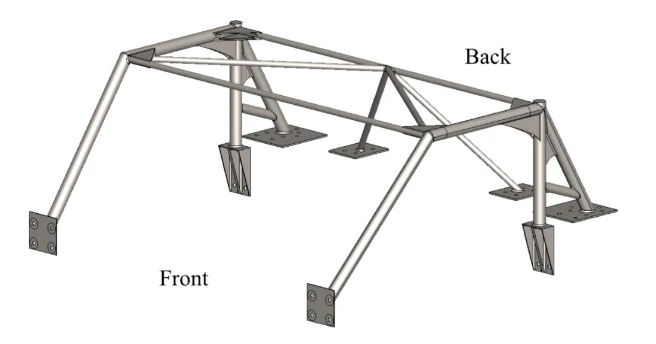
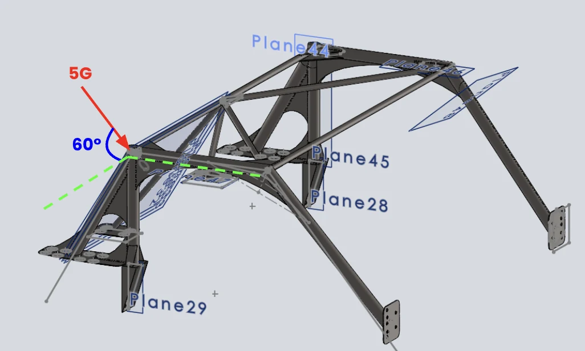
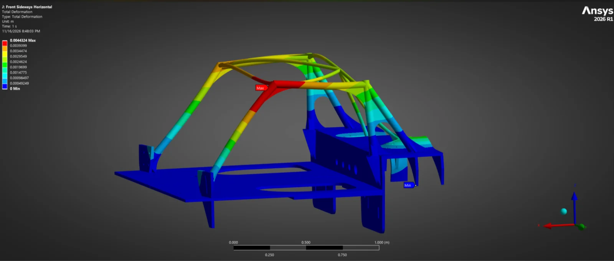
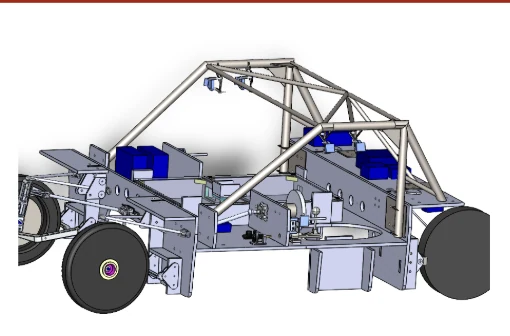
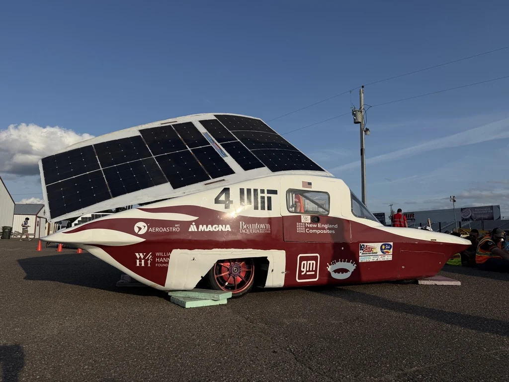

Roll cage structural analysis
Applying load-case analysis and targeted mesh refinement to evaluate the solar car’s structural safety as vehicle mass increases.

CAD view of the tubular roll cage with front and rear attachment points · Click image to enlarge
The challenge
As the MIT Solar Electric Vehicle Team evaluates a higher vehicle mass, we need to re-check the existing roll cage under required load cases while designing the structure for our next vehicle. My work focuses on translating the loading requirements into defensible FEA setups and understanding the load path from the cage into its carbon-fiber chassis.
My contribution
I co-lead a seven-member roll-cage team. In SolidWorks and ANSYS, I have worked through load-case definition, mesh refinement, spheres of influence, and contact definitions at the interfaces between the cage and chassis. Particular attention goes to likely stress concentrations, including weldments and connection regions.
Analysis approach
For the front-sideways angled case shown here, we considered a 5g load applied at a 60° angle through a defined loading patch. Current simulations use a 5 mm base mesh and 1 mm local refinement within spheres of influence placed at predicted high-stress locations. The plotted total deformation is distinct from stress and must not be used alone to establish structural safety.
Preliminary result and next steps
Our current analysis suggests the design can meet a factor of safety of 3 against the von Mises yield criterion and a maximum deformation requirement of 25 mm. We are still refining the mesh and finalizing the results, so this is a preliminary finding rather than a completed validation. The work has been an exercise in making the simulation assumptions just as credible as the final plot.
Project imagery



